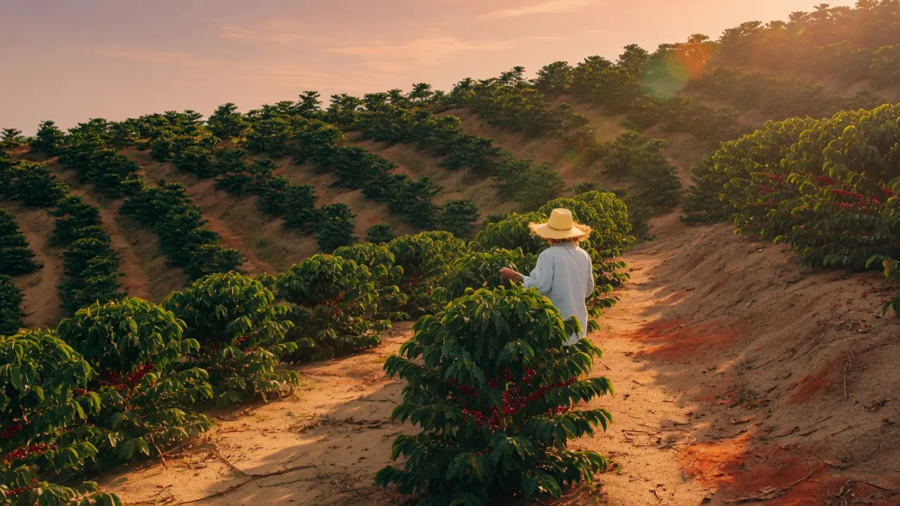
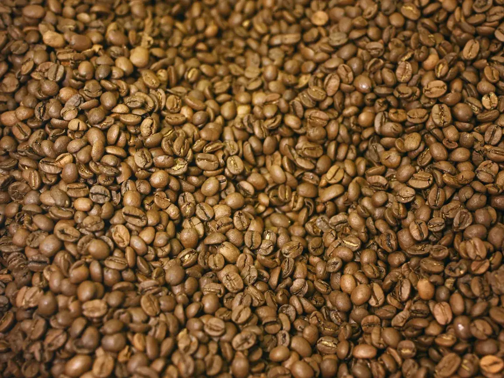
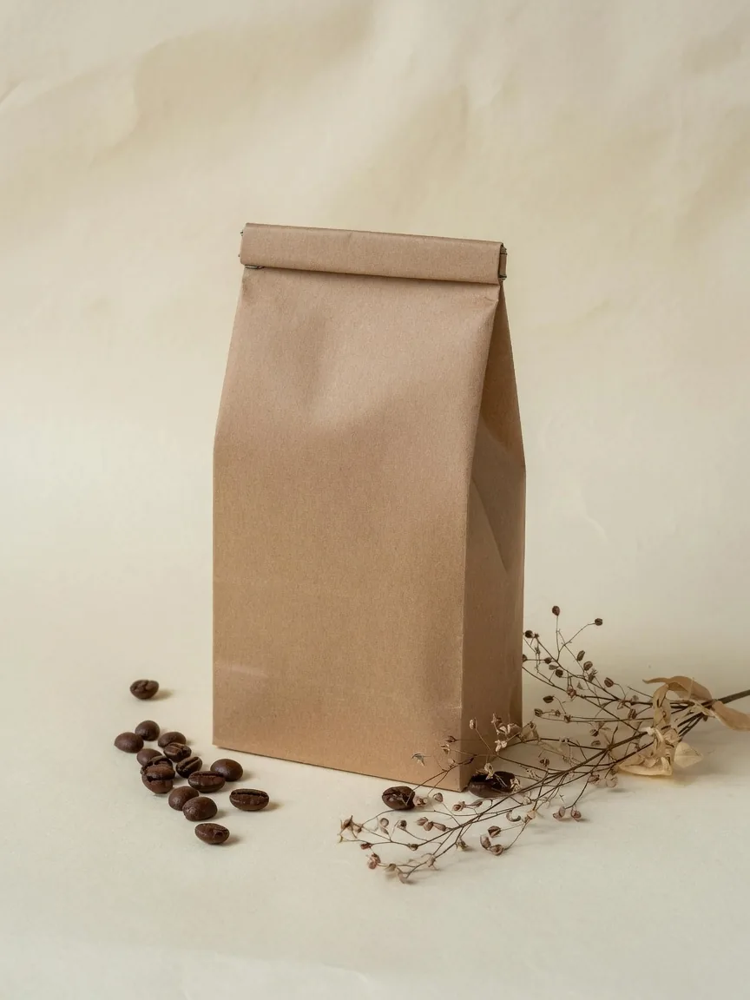

Честность
Дата обжарки, происхождение партии, вкусовой профиль — на виду, не в подвале карточки.
О бренде
С XVI века кофе в Ливане — часть культуры, знак уважения и живая традиция. Al Jar продолжает её в современном формате: семейный бренд, опыт, внимание к деталям.

Производство
Закупка сырого зерна, обжарка до 20 тонн в месяц, фасовка. Не прячем цех — дата обжарки на каждой пачке, потому что свежесть нельзя имитировать.
Специализация: эспрессо и ливанский кофе. Также — гейзер, френч-пресс, фильтр, турка (арабская и турецкая). На российский рынок бренд пришёл с многолетним опытом работы на Ближнем Востоке.

Ценности
Дата обжарки, происхождение партии, вкусовой профиль — на виду, не в подвале карточки.
Кофе — способ собраться вместе. Мы уважаем гостя так же, как хороший хозяин.
Небольшие партии, стабильный профиль, никакой агрессии в продаже.

Шаг 1 из 5
Бразилия, Колумбия, Эфиопия. Высота, тень и ручной сбор решают, каким зерно приедет в цех.
1800метров над уровнем моря

Шаг 2 из 5
Скрин 16/18 — размер зерна, при котором обжарка идёт ровно. Дефекты выбираем вручную.
16/18размер скрина
Шаг 3 из 5
Свой профиль под каждый способ заваривания: эспрессо, фильтр, турка. Небольшие партии, стабильный результат.
205 °Cна выгрузке

Шаг 4 из 5
Фасуем в день обжарки. Дату видно до покупки, а не после вскрытия — свежесть нельзя имитировать.
Обжарено сегодня

Шаг 5 из 5
С XVI века кофе в Ливане — знак уважения и повод собраться. Дальше история продолжается у вас дома.